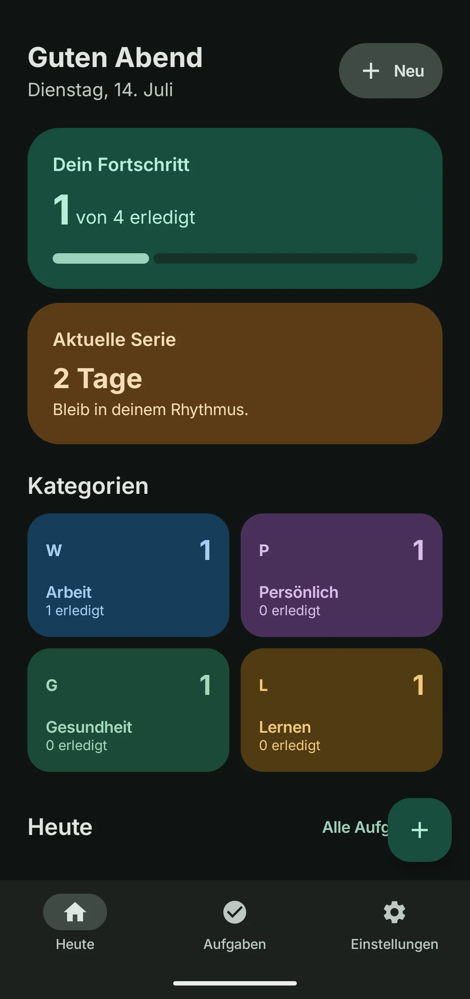
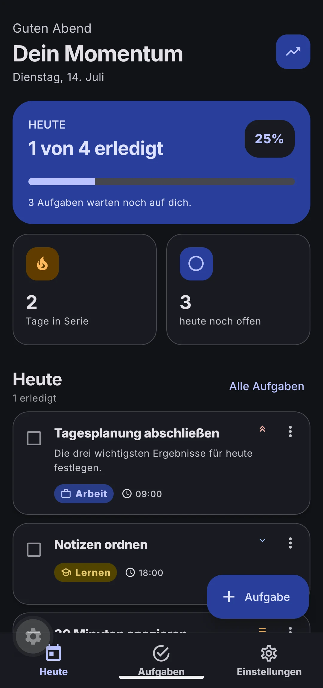
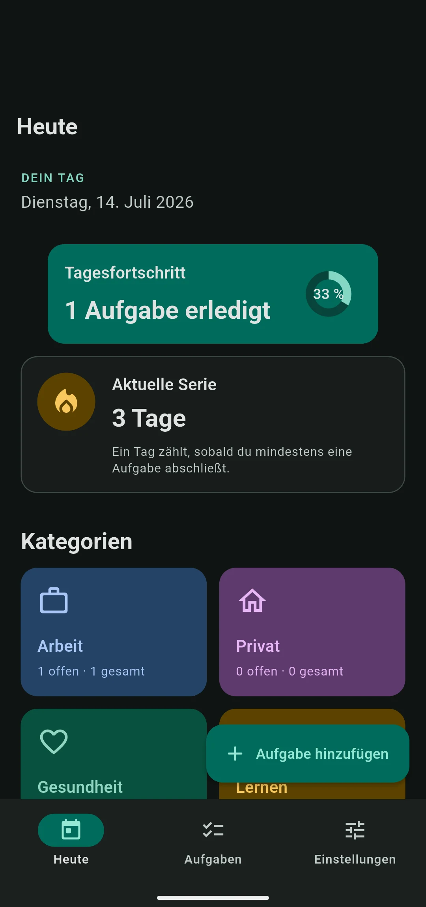

Kotlin + Compose—

Build ✓13/14 Tests36:12
Der schnellste Run. Ein fehlerhafter Matcher lässt den Compose-UI-Test rot.
Vollständiger Bericht →Phase A abgeschlossen
Alle drei Apps bauen. Die endgültige Reihenfolge bleibt offen, bis die 100-Punkte-Prüfung sowie Phase B und C abgeschlossen sind.
Vorläufiger Stand
Stand: Phase A · 14. Juli 2026
Der schnellste Run. Ein fehlerhafter Matcher lässt den Compose-UI-Test rot.
Vollständiger Bericht →
Alle Tests grün. Doctor und Formatcheck beanstanden zwei konkurrierende Lockfiles.
Vollständiger Bericht →
Toolchain vollständig grün. Der Agentenlauf endete durch das Nutzungslimit ohne Abschlussausgabe.
Vollständiger Bericht →Noch keine Platzierung: Die Gedankenstriche sind Absicht. Eine Rangnummer erscheint erst nach der identischen 100-Punkte-Prüfung aller drei Stacks.
Direkter Vergleich
Zeit und Tokens stammen aus den vollständigen Root- und Sub-Agenten-Transkripten. Cache-Tokens werden nicht als neue Tokens gezählt.
Bewertungsmatrix
Die Felder bleiben offen, bis Codeprüfung, Screenshots und Nutzerflüsse nach derselben Rubrik bewertet wurden.